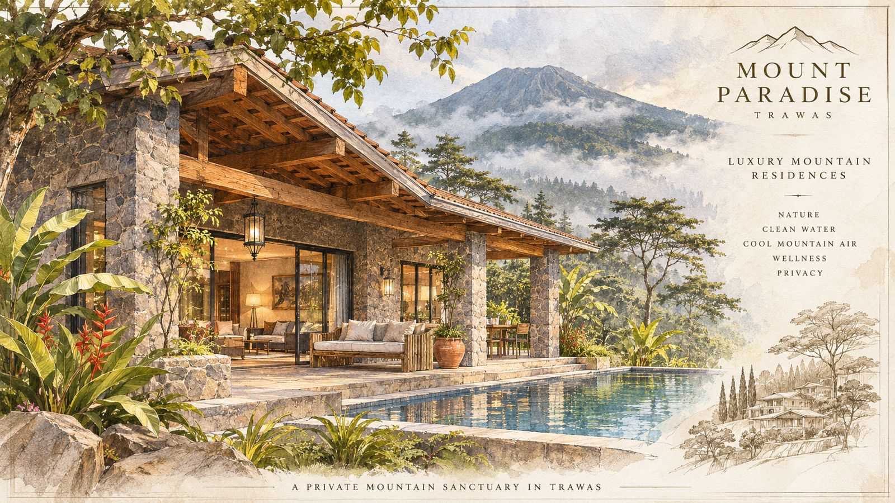

Style 1 / The Garden Lodge
Life around
the veranda.
A low, generous roof shelters rooms that open to a private pool and garden. The emphasis is on an easy flow between the lounge, outdoor dining and quiet corners among the plants.
- Deep covered veranda
- Private pool and layered garden
- BBQ terrace for relaxed entertaining